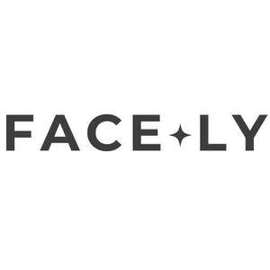

Trade Mark Journal No.2025/021 23 May 2025
UK00004198753 5 May 2025 (3)

- Class 3
- Hair masks; Hair care masks; Hair serums; Skin masks; Facial masks; Hair lotion; Hairstyling masks; Hair shampoo; Skin moisturizer masks; Body mask lotion; Hair dye; Facial beauty masks; Hair mascara; Hair spray; Hair moisturizers; Hair lotions; Face and body masks; Hair balm; Hair bleach; Hair sprays; Hair mousse; Skin masks [cosmetics]; Hair cosmetics; Hair moisturisers; Hair and body wash; Cosmetic facial masks; Facial masks [cosmetic]; Hair lighteners; Hair creams; Hair color; Clay skin masks; Hair colouring; Hair oil; Hair care serums; Hair protection mousse; Hair styling gel; Hair care serum; Skincare cosmetics; Anti-aging skincare preparations; Anti-aging moisturizers used as cosmetics; Skincare preparations; Moisturisers [cosmetics]; Skin moisturizers used as cosmetics; Anti-aging moisturizers; Anti-ageing moisturiser; Suncare lotions [for cosmetic use]; Cosmetic moisturisers; Anti-ageing creams [for cosmetic use]; Moisturising skin lotions [cosmetic]; Anti-aging creams [for cosmetic use]; Beauty serums; Acne cleansers, cosmetic; Non-medicated skincare preparations; Facial moisturisers [cosmetic]; Skin cleansers [cosmetic]; Moisturising skin creams [cosmetic]; Suncare lotions; Beauty serums with anti-ageing properties; Facial creams [cosmetics]; Anti-ageing creams; Anti-aging creams; After-sun oils [cosmetics]; Skin moisturisers; Anti-ageing serums for cosmetic purposes; Skin care lotions [cosmetic]; Skin care cosmetics; Beauty lotions; Skin moisturizers; Skin moisturizer; Skin balms [cosmetic]; Beauty care cosmetics; After-sun lotions [for cosmetic use]; Moisturisers; Skin care creams [cosmetic]; Cosmetic creams for skin care; Skin recovery creams [cosmetics]; Skin creams [cosmetic]; Cosmetic creams for the skin; Skin creams [for cosmetic use]; Sunscreen creams [for cosmetic use]; Facial cleansers [cosmetic]; Anti-wrinkle creams [for cosmetic use]; Cosmetic nourishing creams; Cosmetics; Skin cleansers; Moisturiser; Self-tanning preparations [cosmetics]; Cleansing creams [cosmetic]; Moisturizers; Anti-ageing serum; Hairstyling serums; Cosmetic facial lotions; Facial lotions [cosmetic]; Exfoliants for the care of the skin; Body and facial creams [cosmetics]; Non-medicated skin serums; Facial moisturizers; Cosmetic creams and lotions; Skin care oils [cosmetic]; Exfoliants for the cleansing of the skin; Moisturising body lotion [cosmetic]; Anti-aging serum for cosmetic use; Hair care lotions [for cosmetic use]; Skin lotions; Beauty creams; Lotions for the skin; Sunscreens [for cosmetic use]; After-sun milks [cosmetics]; Skin cleansing lotion; Cosmetic massage creams; Skin toners [cosmetic]; Body creams [cosmetics]; Sunscreen [for cosmetic use]; Hair care creams [for cosmetic use]; Skin whitening creams; Creams (Skin whitening -); Cosmetic hair lotions; Facial creams [for cosmetic use]; Sun care lotions [for cosmetic use]; Skin make-up; Exfoliating creams; After-sun milk [cosmetics]; Skin cleansers [non-medicated]; Moisturizing creams; Creams for tanning the skin; Skin lotion; Skin cream [for cosmetic use]; Cosmetics for use in the treatment of wrinkled skin; Creams (Cosmetic -); Cosmetic creams; Cosmetics for use on the skin; Skin hydrators; Cleansing lotions; Skin hydrators for cosmetic purposes; Organic cosmetics; Night creams [cosmetics]; After-sun lotions; Facial gels [cosmetics]; Facial cleansers; Anti-wrinkle creams; Cosmetic preparations for skin firming; Anti-wrinkle cream [for cosmetic use]; Exfoliant creams; Moisturising creams; Moisturising gels [cosmetic]; Moisturizing preparations for the skin; Skin creams; Creams for the skin; Colour cosmetics for the skin; Non-medicated skin lotions; Skin calming serum; Skin relief serum [cosmetic]; Facial serum for cosmetic use; Moisturizing milk; Skin emollients [non-medicated]; Skin cleansing cream [non-medicated]; Skin hydrators being injectable dermal fillers; Non-medicated scalp treatment cream; Non-medicated skin creams; Skin creams [non-medicated]; Cosmetics containing hyaluronic acid; Skin cleansing cream; Hair emollients; Non-medicated stimulating lotions for the skin; Cosmetics for the treatment of dry skin; Moisture body lotion; Collagen for cosmetic purposes; Facial toners [cosmetic].
BY MIA COSMETICS LTD
OCAL ENIS